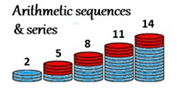
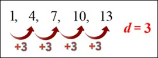
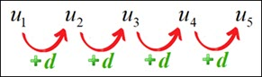
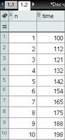
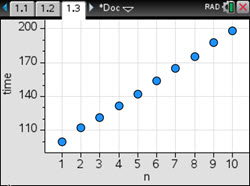
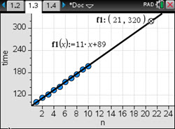

IB Docs (2) Team
IB Docs (2) Team

1B. Arithmetic sequences & series (SN)
∼ Student Notes ∼

Section 1B. Arithmetic sequences & seriesSub-sections:
1B.1 General term of an arithmetic sequence
1B.2 Graph of an arithmetic sequence
1B.3 Arithmetic series
1B.4 Sigma notation
1B.5 Applications of arithmetic sequences & series
1B.6 Summary
■ syllabus content covered in this section ■
SL 1.2* Arithmetic sequences and series; use of the formulae for the \(n\)th term and the sum of the first \(n\) terms of the sequence; use of sigma notation for sums of arithmetic sequences; applications (e.g. simple interest); interpretation and prediction where a model is not perfectly arithmetic in real life.
1B.1 General term of an arithmetic sequence
Imagine that someone is willing to pay you for a job that lasts for exactly 30 days - and that they ask how you would like to be paid for the job. Let's consider the following two payment plans that you could propose to your prospective employer.
Plan A: You get paid $1 for the first day and for each day after that you get paid $3 more than the previous day. So, the payments for the first week is the sequence \(1,\;4,\;7,\;10,\;13,\;16,\;19\) . Your total (cumulative) pay for the first week is given by the sum of the series \(1 + 4 + 7 + 10 + 13 + 16 + 19\) which is \($70\).
Plan B: You get paid just $0.01 (one cent) for the first day and for each day after that you get paid two times what you were paid the previous day. So, the payments for the first week is the sequence \(0.01,\;0.02,\;0.04,\;0.08,\;0.16,\;0.32,\;0.64\) . Your cumulative pay for the first week is the sum of the series \(0.01 + 0.02 + 0.04 + 0.08 + 0.16 + 0.32 + 0.64\) which is \($1.27\).
Which payment plan do you think is best for you? Which payment plan do you think your employer would choose? After one week, Plan A will earn you about 55 times what you would earn with Plan B (\(\frac{{70}}{{1.27}} \approx 55.12\)); and after two weeks, you will have earned \($287\) with Plan A, but only \($163.83\) with Plan B. Answering these questions and a closer consideration of Plan B must wait until the next section (1C). For now, let's take a closer look at Plan A.
Recall from the previous section (1A), that a sequence where each term (after the first term) is determined by adding a constant to the previous term is called an arithmetic sequence. Clearly, the list of daily payments for Plan A is an arithemtic sequence. We can make use of the recursive rule for Plan A, "start with \($1\) for the 1st day; then each subsequent day's pay is \($3\) added to the previous day's pay", to quickly construct the sequence of 30 payments using Excel (see video at right; no sound). We can see from the spreadsheet results that with Plan A you would make \($58\) on the 20th day. How can we calculate this without having to find what you would make on each of the days before the 20th day? In other words, we'd like to have an explicit rule (formula) for finding the \(n\)th term of the sequence. As Figure 1 shows, your payment of \($13\) on the 5th day can be calculated (recursively) by adding \($3\) to the 1st day's payment four times. To get from the 1st term (\(n = 1\)) in a sequence to the 5th term (\(n = 5\)) in a sequence, the common difference \(d\) is added 4 times (Figure 2). To quickly calculate your pay on the 20th day, add 19 payments of \($3\) to \($1\) (1st day's pay): \(\$ 1 + \left( {20 - 1} \right) \cdot \$ 3 = 19 \cdot \$ 3 = \$ 58\).


In general, to find the \(n\)th term of an arithmetic sequence add \(\left( {n - 1} \right)\) times the common difference \(d\) to the first term.
\(n\)th term (general term) of an arithmetic sequence
The \(n\)th term, \({u_n}\), of an arithmetic sequence with first term \({u_1}\) (initial term) and common difference \(d\) is given by the following explicit formula (in the Analysis & Approaches formula booklet):
\({u_n} = {u_1} + \left( {n - 1} \right)d\)
note: Although \(n\) often represents the position (1st, 4th, etc) of the term in a sequence, it is also common to use other letters such as \(r\) and \(i\) instead of \(n\). Also, it is common to use letters other than \(u\) such as \(a\) or \(t\) to represent the terms of a sequence.
Example 1
Leon feels that he is spending too much time playing video games. He estimates that he spends 300 minutes each day playing video games. Leon decides to commit to a 'cutback program' where he will reduce the time spent on video games by 7 minutes each day (his favourite number is 7 because he was born on 7-7-2007).
(a) If Leon plays video games for 300 minutes on the first day of his program, then how many minutes will Leon play video games on the 30th day of his program?
(b) Leon decides he will stop his program on the first day that he plays video game for less than one hour. On what day does he stop his 'cutback program'?
Example 1 solution:
(a) The amount of time that Leon plays video games on each day of his program is an arithmetic sequence where \({u_1} = 300\) and \(d = - \,7\). Using the formula \({u_n} = {u_1} + \left( {n - 1} \right)d\), his time spent playing video games on the 30th day is given by: \({u_{30}} = 300 + \left( {30 - 1} \right)\left( { - 7} \right) = 300 - 203 = 97\) . If Leon sticks precisely to his program, he will play video games for 97 minutes on the 30th day.
(b) To find the first day that Leon plays video games for less than one hour, solve the equation \({u_n} = 300 + \left( {n - 1} \right)\left( { - 7} \right) = 60\). Solving for \(n\) gives \(300 - 7n + 7 = 60\;\; \Rightarrow \;\;7n = 247\;\; \Rightarrow \;\;n = \frac{{247}}{7} \approx 35.29\)
On the 35th day, Leon will not quite be below 60 minutes: \(300 + \left( {35 - 1} \right)\left( { - 7} \right) = 62\). Hence, \(n=36\); and Leon will stop his program on the 36th day when he will play video games for 55 minutes (\(62-7\)).
Note: There is a very crude but simple way to use a GDC to generate the sequence to answer the two questions in Example 1. Watch the video below (with audio description).
Generally speaking, it is best to apply the explicit formula for the \(n\)th term for answering a question like Example 1 rather than repeatedly applying the recursive rule on a GDC. Although it's nice to see the terms listed one after another, it is easy to make an error when trying to keep track of what number term (position in the sequence) was just calculated. Also, writing out a long list of terms as your work for answering an exam question would be frowned upon. And, of course, this would not be possible on a Paper 2 exam question because you would not have a GDC with you.
1B.2 Graph of an arithmetic sequence
A better use of a GDC is to make a graph to illustrate the behaviour of a sequence. The formula for the \(n\)th term in Example 1, \({u_n} = 300 + \left( {n - 1} \right)\left( { - 7} \right)\), can be simplified to \({u_n} = - 7n + 307\). Thus, the formula for \({u_n}\) is a linear function where \(n\), the input, is a positive integer, and \({u_n}\) is the output. The graph of \({u_n} = - 7n + 307\) will not be a smooth continuous curve but a discrete set of points:
\(\left( {1,300} \right),\left( {2,293} \right),\left( {3,286} \right), \ldots ,\left( {35,62} \right),\left( {36,55} \right)\)
The video at right (no sound) shows a way to graph the arithmetic sequence of 36 terms from Example 1 on a TI-84 calculator. This is done by creating two sequences: first a list (stored in L1) of the positive integers from 1 to 36 for the set of values for the input \(n\) (number/position of the term), and a second sequence for a list (stored in L2) of the values for the ouput \({u_n}\). Then a Stat Plot is set up that graphs L1 vs L2 (both lists) on the x-y coordinate plane where the values for \(n\) in list L1 are the x-coordinates and the values for \({u_n}\) in list L2 are the y-coordinates. The discrete plot (graph) clearly illustrates that the points \(\left( {n,{u_n}} \right)\) generated by the formula \({u_n} = - 7n + 307\) are all on a line; i.e. a linear function. The gradient of the line is \( - 7\) which corresponds to the common difference \(d\) for the sequence. The 36 terms in the sequence for Example 1 show a constant decrease (\(d = - 7\)), or linear decay.
← video: plotting sequence from Example 1 on the TI-Nspire where points are \(\left( {n,{\textrm{time}}} \right)\)
Graph (plot) of an arithmetic sequence
The explicit formula for the \(n\)th term of an arithmetic sequence is a linear function whose plot is a set of discrete points, \(\left( {n,{u_n}} \right)\), that all lie on a line with a gradient of \(d\), the common difference of the sequence. The terms in an arithmetic sequence display linear growth (positive \(d\)) or linear decay (negative \(d\)).
Modelling with an arithmetic sequence
Recall Leon's 'cutback program' in Example 1. Perhaps Leon did reduce his time playing video games by exactly 7 minutes each day, but it would be a difficult to be that precise. Lilly, a friend of Leon's, has decided to increase the time she plays video games each day because she is preparing for an e-sports competition. The following list is her time (in minutes) playing video games each day for the first 10 days (in order) of her 'buildup program': \(100,112,121,132,142,154,165,175,188,198\). It's clear that Lilly did not increase her time by exactly the same amount each day. For the ten terms in this sequence, the nine differences from one term to the next are: \(12,9,11,10,12,11,10,13,10\). The average difference is \(10.\bar 8\) minutes. The sequence of Lilly's times for the first 10 days of her program can be modelled (approximated) by an arithmetic sequence with a common difference of 11. We can use the linear function from the formula for the general term of the 'model' sequence to approximate Lilly's video game time on future days in her program (assuming her program continues similarly to the first 10 days).
Example 2: Lilly decides to stop her 'buildup program' after 3 weeks. For how many minutes will Lilly play video games on the last day (21st) of her program?
Example 2 solution:
The arithmetic sequence that is a reasonable model for the sequence of daily times for Lilly has \({u_1} = 100\) and \(d = 11\). Hence, a reasonable estimate for the amount of time that Lilly will play video games on the 21st day can be calcuated using the formula for the \(n\)th term of an arithmetic sequence which will be a linear function:
\({u_n} = 100 + \left( {n - 1} \right) \cdot 11\;\;\; \Rightarrow \;\;\;{u_n} = 11n + 89\) Evaluate the function for \(n = 21\): \({u_n} = 11\left( {21} \right) + 89 = 320\)
Hence, the prediction is that Lilly will play video games for approximately 320 minutes on the last day of her 3-week program.
The images below (from a TI-Nspire) illustrate a graphical approach to modelling Lilly's daily times. The middle image shows a scatter plot of Lilly's times for the first 10 days of her program; and the image on the right includes a graph of the linear (model) function \(f\left( x \right) = 11x + 89\) that estimates Lilly's time on the \(x\)th day of her program. A trace on the graph shows that \(f\left( {21} \right) = 320\).



1B.3 Arithmetic series (finding the sum of an arithmetic sequence)
Example 3
From a stationary position, an electric scooter is accelerating in a straight line at a constant rate such that in the 1st second it moves 0.5 metres, in the 2nd second it moves 2 metres, in the 3rd second it moves 3.5 metres, and in the 4th second it moves 5 metres. If this pattern continues, then what is the total distance travelled by the scooter in the first 10 seonds?
Example 3 solution:
The pattern of the scooter's acceleration is that for the 2nd second onwards it travels 1.5 metres further than the previous second. Hence, the list of distances travelled for each second is an arithmetic sequence with \({u_1} = 0.5\) and \(d = 1.5\) . The sum of the first 10 terms of this sequence (which we can label as \({S_{10}}\)) is the finite arithmetic series \({S_{10}} = 0.5 + 2 + 3.5 + 5 + 6.5 + 8 + 9.5 + 11 + 12.5 + 14\). Calculating \({S_{10}}\) is straightforward, if a bit tedious, but if the sum had been for the first 25 seconds, an efficient algebraic technique would be very useful.
There is an efficient way to find the sum of an arithemtic series that is based on a clever approach used by the famous mathematician Carl Friedrich Gauss (1777-1855) when he was a very young student (see video from the Art of Problem Solving site).
For the 10 terms in the series \({S_{10}} = 0.5 + 2 + 3.5 + 5 + 6.5 + 8 + 9.5 + 11 + 12.5 + 14\), add the 1st and 10th terms (\(0.5 + 14 = 14.5\)), and add the 2nd and 9th terms (\(2 + 12.5 = 14.5\)), and add the 3rd and 8th terms (\(3.5 + 11 = 14.5\)), the 4th and 7th terms (\(5 + 9.5 = 14.5\)), and, finally, the 5th and 6th terms (\(6.5 + 8 = 14.5\)). Each of these pairs of terms adds up to \(14.5\), and the number of pairs is 5 (half of the total # of terms). Hence, the sum of this series is \({S_{10}} = \frac{{10}}{2}\left( {14.5} \right) = 72.5\). The total distance travelled by the scooter in the first 10 seconds is \(72.5\) metres.
An excerpt from Gauss' biography on the MacTutor History of Mathematics Archive (University of St Andrews):
At the age of seven, Carl Friedrich Gauss started elementary school, and his potential was noticed almost immediately. His teacher … and his assistant … were amazed when Gauss summed the integers from 1 to 100 instantly by spotting that the sum was 50 pairs of numbers each pair summing to 101.
The technique used by Gauss, and in the solution for Example 3, can be applied to develop a general formula for the sum of an arithmetic series. The key aspect of the technique is adding pairs of terms: first term plus last term, and second term plus next-to-last term (\({u_2} + {u_{n - 1}}\)), and \({u_3} + {u_{n - 2}}\), and so on.
Let \({S_n}\) be the sum of an arithmetic series with \(n\) terms: \({S_n} = {u_1} + {u_2} + {u_3} + \cdots + {u_{n - 2}} + {u_{n - 1}} + {u_n}\)
... write the series with the order of the terms reversed: \({S_n} = {u_n} + {u_{n - 1}} + {u_{n - 2}} + \cdots + {u_3} + {u_2} + {u_1}\)
... add these two expressions: \(2{S_n} = \left( {{u_1} + {u_n}} \right) + \left( {{u_2} + {u_{n - 1}}} \right) + \left( {{u_3} + {u_{n - 2}}} \right) + \cdots + \left( {{u_1} + {u_n}} \right) + \left( {{u_2} + {u_{n - 1}}} \right) + \left( {{u_3} + {u_{n - 2}}} \right)\)
... it follows that: \(2{S_n} = n\left( {{u_1} + {u_n}} \right)\); which leads to the general formula \({S_n} = \frac{n}{2}\left( {{u_1} + {u_n}} \right)\)
This mirrors the working shown in the solution of Example 3 where the sum of the series \(0.5 + 2 + 3.5 + 5 + 6.5 + 8 + 9.5 + 11 + 12.5 + 14\) is found with the calculation \({S_{10}} = \frac{{10}}{2}\left( {14.5} \right)\) which equals \(72.5\)
Sum of an arithmetic series with n terms (version 1)
The sum of \(n\) terms, \({S_n}\), of an arithmetic series with first term \({u_1}\) and last term \({u_n}\) is given by the following formula (in the Analysis & Approaches formula booklet):
\({S_n} = \frac{n}{2}\left( {{u_1} + {u_n}} \right)\)
What if we want to find the sum of a series but we do not know the last term?
Example 4
Find the sum of the first 25 terms of the following arithmetic series: \(13 + 9 + 5 + 1 - 3 - 7 - \; \cdots \)
Example 4 solution:
We can find the last term - the 25th term, \({u_{25}}\) - by using the formula for the \(n\)th term.
\({u_n} = {u_1} + \left( {n - 1} \right)d\;\;\; \Rightarrow \;\;\;{u_{25}} = 13 + \left( {25 - 1} \right)\left( { - \,4} \right)\;\;\; \Rightarrow \;\;\;{u_{25}} = - \,83\)
Now that we know the last term, we can use the formula \({S_n} = \frac{n}{2}\left( {{u_1} + {u_n}} \right)\) to find \({S_{25}}\) by substituting for \(n\), \({{u_1}}\) and \({{u_n}}\).
\({S_{25}} = \frac{{25}}{2}\left( {13 - 83} \right) = - \,875\) ; hence, the sum of the first 25 terms of the series \(13 + 9 + 5 + 1 - 3 - 7 - \; \cdots \) is \( - \,875\).
The approach used for the solution to Example 4 can be used to develop another formula for the sum of an arithmetic series. As we know from the first sub-section on this page (1B.1), the formula for the \(n\)th term of an arithmetic sequence is \({u_n} = {u_1} + \left( {n - 1} \right)d\). Substituting \({u_1} + \left( {n - 1} \right)d\) for \({u_n}\) in the formula \({S_n} = \frac{n}{2}\left( {{u_1} + {u_n}} \right)\) gives \({S_n} = \frac{n}{2}\left( {{u_1} + {u_n}} \right) = \frac{n}{2}\left( {{u_1} + {u_1} + \left( {n - 1} \right)d} \right) = \frac{n}{2}\left( {2{u_1} + \left( {n - 1} \right)d} \right)\).
Using this version of the formula for the sum of an arithmetic series, the calculation for Example 4 goes as follows:
\({S_{25}} = \frac{{25}}{2}\left( {2 \cdot 13 + \left( {25 - 1} \right)\left( { - \,4} \right)} \right) = \frac{{25}}{2}\left( {26 - 96} \right) = \frac{{25}}{2}\left( { - 70} \right) = - \,875\)
Sum of an arithmetic series with n terms (version 2)
The sum of \(n\) terms, \({S_n}\), of an arithmetic series with first term \({u_1}\) and common difference \(d\) is given by the following formula (in the Analysis & Approaches formula booklet):
\({S_n} = \frac{n}{2}\left( {2{u_1} + \left( {n - 1} \right)d} \right)\)
Example 5
Let's return to the 30-day job scenario described at the very start of this section. What will be your total payment for the 30 days if you are paid according to Plan A?
Example 5 solution:
As we indicated earlier, the list of daily payments with Plan A is an arithmetic sequence of 30 terms such that \({u_1} = 1\) and \(d = 3\). Using the formula for the sum of an arithmetic series, \({S_n} = \frac{n}{2}\left( {2{u_1} + \left( {n - 1} \right)d} \right)\), sum of the terms in this sequence is: \({S_{30}} = \frac{{30}}{2}\left( {2 \cdot 1 + \left( {30 - 1} \right)3} \right) = 1335\). Therefore, your total pay for the 30-day job using Plan A is $1335.
1B.4 Sigma (\(\Sigma\)) notation
Recall from subsection 1A.1 that sigma notation is an efficient way to represent a sum using the symbol \(\sum \) (Greek capital letter sigma). The notation \(\sum\limits_{r = 1}^n {{u_r}} \) represents the sum of \(n\) terms (hence, \(n\) is a constant) where \({{u_r}}\) is the algebraic rule (in terms of the variable \(r\)) for generating each term starting with \(r = 1\), then \(r = 2\), and so on, up to \(r = n\). In other words, what is written below the sigma symbol, \(\Sigma\), tells us the variable and the starting value for the variable; and the number written above \(\Sigma\) tells us the last value of the variable. The variable will only have integer values. For example, the expression \(\sum\limits_{r = 0}^4 {\left( {2r + 3} \right)} \) tells us to add terms generated by the rule \({u_r} = 2r + 3\) for values of the variable \(r\) starting at \(r = 0\) and stopping at \(r = 4\) (so, there will be 5 terms). Hence, \(\sum\limits_{r = 0}^4 {\left( {2r + 3} \right)} = 3 + 5 + 7 + 9 + 11\).
Also, recall from sub-section 1B.2 above that the rule (formula) for terms in an arithmetic sequence will be a linear function, and that the terms in an arithmetic sequence display linear growth (positive \(d\)) or linear decay (negative \(d\)). Thus, \(\sum\limits_{r = 1}^n {{u_r}} \) represents an arithmetic series if \({u_r}\) is a linear function which means it is in the form \({u_r} = d \cdot r + c\) where \(d\) is the common difference and \(c\) is also a constant.
Examples of series represented with sigma notation
| (a) \(\sum\limits_{r = 1}^7 r = 1 + 2 + 3 + 4 + 5 + 6 + 7\) | (b) \(\sum\limits_{i = 1}^4 {\left( {3{i^2} - 2i + 1} \right)} = 2 + 9 + 22 + 41\) |
| (c) \(\sum\limits_{n = 1}^5 {\left( {3n - 8} \right)} = - \,5 - 2 + 1 + 4 + 7 + 10\) | (d) \(\sum\limits_{n = 0}^4 {\frac{1}{{n + 1}}} = 1 + \frac{1}{2} + \frac{1}{3} + \frac{1}{4} + \frac{1}{5}\) |
| (e) \({\sum\limits_{r = 0}^\infty {\left( {\frac{1}{2}} \right)} ^r} = 1 + \frac{1}{2} + \frac{1}{4} + \frac{1}{8} + \frac{1}{{16}} + \; \cdots \) | (f) \(\sum\limits_{r = 1}^6 {\left( {30 - 8r} \right)} = 22 + 14 + 6 - 2 - 10 - 18\) |
Note that the variable (\(r\), \(n\) or \(i\) are used here) written below the \(\Sigma\) symbol can start at any value but typically the variable starts at 1 or 0. It is convenient for it to start at 1 such as in (a), (b), (c) & (f) because then the value of the variable for a particular term will match the position of the term. For example, in (b) the 3rd term has \(i=3\) , so the value of the variable \(i\) also serves as a 'counter' (1 for 1st term, 2 for 2nd term, etc). The series in (a), (c) & (f) are arithmetic. Note that the rule (formula) for each of these is a linear function: \({u_r} = r\) in (a); \({u_n} = 3n - 8\) in (c); and \({u_r} = 30 - 8r\) in (f). The series in (b), (d) & (e) are not arithmetic (series in (e) is geometric) so the rule for each of these is not a linear function.
Example 6
Write an expression using sigma notation to represent each of the following arithmetic series. Use \(r\) for the variable (counter) and start at \(r = 1\).
(a) \( - \,11 - 5 + 1 + 7 + 13 + 19 + 25\)
(b) \(29.3 + 26.6 + 23.9 + 21.2 + 18.5\)
Example 6 solution:
(a) Use the formula for the \(n\)th term of an arithmetic sequence, \({u_n} = {u_1} + \left( {n - 1} \right)d\), to find the rule (formula) for the series.
\({u_1} = - 11\) and \(d = 6\); substituting gives \({u_n} = - 11 + \left( {n - 1} \right)6\;\;\; \Rightarrow \;\;\;{u_n} = 6n - 17\)
Therefore, \(\sum\limits_{r = 1}^7 {\left( {6n - 17} \right) = } - \,11 - 5 + 1 + 7 + 13 + 19 + 25\)
(b) Repeating the approach used in (a):
\({u_1} = 29.3\) and \(r = - \,0.7\); substituting gives \({u_n} = 29.3 + \left( {n - 1} \right)\left( { - \,0.7} \right)\;\;\; \Rightarrow \;\;\;{u_n} = 30 - 0.7n\)
Therefore, \(\sum\limits_{r = 1}^5 {\left( {30 - 0.7n} \right) = } 29.3 + 26.6 + 23.9 + 21.2 + 18.5\)
1B.5 Applications of arithemetic sequences & series
Arithmetic sequences and series are utilized in a wide range of applications. Examples in the first three sub-sections on this page illustrate some applications. A common application of arithmetic series is simple interest. Interest can be interpreted two different ways, as either (i) money that is earned during a period of time from money in an account, or (ii) money that is paid (usually in installments) as the cost for borrowing a certain amount of money (the principal). Simple interest is calculated from only the (i) initial amount deposited into an account, or (ii) the principal of a loan (amount borrowed); so, the interest for each time interval is the same (constant). In the next section (1C) we will see that compound interest operates differently in that interest earned from an account, or interest paid for a loan, will not be the same for each time interval.
Example 7
If you deposited £1000 in an account that earns simple interest at a rate of 2.45% per year (per annum), how much would be in the account after 10 years? Assume that the account has no further deposits and no withdrawals during the 10 years.
Example 7 solution:
The simple interest earned each year is a constant which is 2.45% of 1000. Hence, the amount of simple interest added to the account each year is equal to \(\frac{{2.45}}{{100}}\left( {1000} \right) = 24.5\).
The total amount in the account after 10 years will be the sum of an arithmetic series with 11 terms because the first term will be initial deposit of £1000 and then there are 10 further terms for each of the 10 years where interest is added. Also, \({u_1} = 1000\) and \(d = 24.5\). We do not know the last term in the series, so we will use the formula \({S_n} = \frac{n}{2}\left( {2{u_1} + \left( {n - 1} \right)d} \right)\) to find the sum of the series. Total amount \( = {S_{11}} = \frac{{11}}{2}\left( {2 \cdot 1000 + \left( {11 - 1} \right)24.5} \right) = 12347.50\)
Therefore, after 10 years the account will have £12,347.50
1B.6 Summary
- The explicit formula for the \(n\)th term of an arithmetic sequence is: \({u_n} = {u_1} + \left( {n - 1} \right)d\)
- The explicit formula for the \(n\)th term of an arithmetic sequence is a linear function whose plot is a set of discrete points, \(\left( {n,{u_n}} \right)\), that all lie on a line with a gradient of \(d\), the common difference of the sequence.
- The terms in an arithmetic sequence display linear growth (positive \(d\)) or linear decay (negative \(d\)).
- An arithmetic sequence can be used to model and predict further results for a set of numbers that display a pattern that is close to being arithmetic but is not perfectly arithmetic (i.e. the difference between terms is constant).
- There are two versions for the formula to calculate the sum of an arithmetic series:
(i) \({S_n} = \frac{n}{2}\left( {{u_1} + {u_n}} \right)\) (ii) \({S_n} = \frac{n}{2}\left( {2{u_1} + \left( {n - 1} \right)d} \right)\) - Sigma (\(\Sigma\)) notation is a convenient and efficient way to represent arithmetic series. \(\sum\limits_{r = 1}^n {{u_r}} \) represents the sum of \(n\) terms where \({{u_r}}\) is the algebraic rule (a linear function) for generating each term.
- Arithmetic sequences and series have many applications. For this course, the most important application to be familiar with are questions involving simple interest.
| ← go to previous section: 1A. Sequences & series intro | go to next section: 1C. Geometric sequences & series → |
 Twitter
Twitter
 Facebook
Facebook
 LinkedIn
LinkedIn